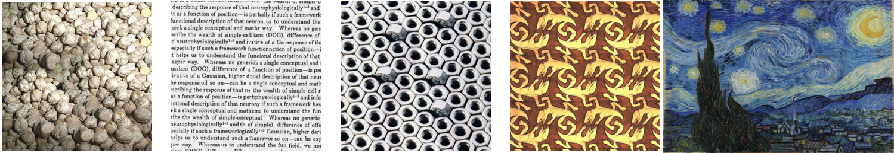
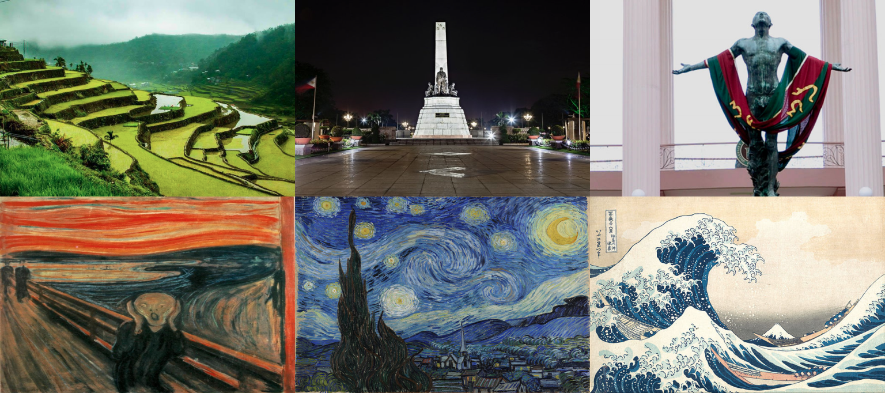
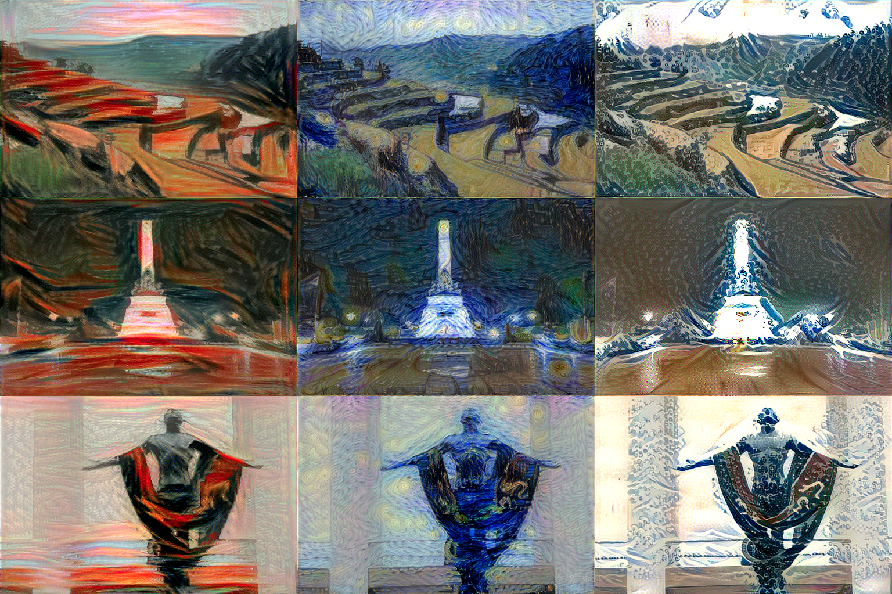

The premise of this paper is very simple, can any artistic style be transferred to any content? The short answer: Yes.
A paper critic and implementation of Gatys et. al's Image Style Transfer Using Convolutional Neural Networks. In this paper, Gatys, Ecker and Bethge formally introduced a novel algorithm called a Neural Algorithm of Artistic Style (NAAS). NAAS is essentially a texture transfer algorithm that uses a texture model based on deep image representations.
They have used Convolutional Neural Networks (CNNs) that were optimized for object recognition. The style transfer reduces to an optimization problem within one neural network—essentially, the artistic semantics of the artwork are selected in order to match the representations given by the regular image. For instance, the swirly sky in Van Gogh's Starry Night matches the “sky” in the regular image. This was done by creating a representation of the regular content and a separate one of that of the artwork, then combining it together, optimizing to minimize its distances in the CNN layers to produce an image with high perceptual quality.
The data used is an image of the Neckarfront in Tübingen, Germany which was “painted” using the styles of Vincent van Gogh's The Starry Night, Edvard Munch's Der Schrei (known as The Scream), Pablo Picasso's Femme nue assise and several more artists. The beauty of this algorithm is that it can input any image and style and is not limited to low-level image features. In this regard, I have implemented the algorithm myself using TensorFlow using the code made by Cameron Smith [1]. And true to the title of this paper, I have implemented it using images of Filipino places namely the Luneta Park, Banaue Rice Terraces and UP Oblation, answering our question: What if famous painters were based in the Philippines?
Indeed, the NAAS algorithm was able to successfully transfer the style of several well-known artworks to regular images with high perceptual quality, even with our samples. Whilst there are some technical limitations on the algorithm, it still provides an effective way especially if the resolution of the image will not be an issue. The future improvements in deep learning will likely optimize more computing power in the future, thus providing better resolution when using the NAAS algorithm.
This document aims to provide a discussion and assessment of this algorithm. To further show its effectiveness, I implemented it using images of Filipino landmarks, “painting” it using artworks such as The Starry Night, The Scream and The Wave.
Discussion and Assessment
The process of transferring style or basically the texture of one image to another is not new. A number of algorithms has already been in place that can resample pixels of a given texture and then project it to an image. For instance, Kwatra et al. already did this using graph cuts, wherein the size of the patch is not known beforehand [2]. On the other hand, Herztmann et al. used image analogy—that is, create an analogy of image A to image A′ and use that analogy to create image B′ from image B [3]. There has also been a frequency-based approach wherein textures with low frequency are preserved in the target image while the higher ones are transferred which was successfully implemented by Ashikhmin [4]. Whilst these techniques are indeed good, they have been several limitations. For instance, in Herztmann et al.'s work they would need an actual projection of image A to image A′ in order to create the transfer. This would be problematic in creating a generic texture transfer, likely a logistical nightmare. However, the number one problem with these algorithms is the limitation of using low-level image features. For instance, the first four images below were from Kwatra et al., and all were using highly repetitive image textures. Unlike the first image of Starry Night, there is a semantic image content, where the sky, the moon, the towers and the village have several textures.

This particular limitation is where this paper comes in. The strength of the Neural Algorithm of Artistic Style (NAAS) is that it can separate the image representation of these artistic textures and apply it accordingly to the target image without the restriction of using only the low-level image features of the image.
The use of CNNs in this texture problem can only be deemed to be appropriate given the previous limitations of the papers presented. CNNs that were trained to do object localization and object recognition provide a framework for the algorithm to factorize the texture representations then transfer such style accordingly based on image semantics. The use of a VGG Network [5] is highly appropriate given that it is specially used for large scale image recognition. Its nature of being an extremely wide and deep model offers great flexibility in using different styles of images and styles.
However, whilst this advancement is a great feat, NAAS has its limitations. The major factor is the resolution of the images which is quite low: 512 px by 512 px in the cases created. Of course, this can be increased arbitrarily but it will definitely take more time. I have personally experienced this. Currently, I am using an i5 Macbook Pro with 16GB RAM and it took me almost 20 minutes to render one image with only 100 iterations! For a benchmark, the authors used 1,000 iterations. I can just imagine the time needed to create a 2500 px by 2500 px image.
Although this limitation is really taxing as of now, the developments in deep learning and in computational power of our computers in the future will definitely be a factor. With machine learning and data science in general on the rise in the past decade, it will not be surprising to see more efficient algorithms to implement Convolutional Neural Networks. In the case of this paper, it is good to see that this limitation is being solved by several other researchers. In Li and Wand [6], they have added a Markov Random Fields component to the NAAS to synthesize images. In Johnson et al. [7], a feed-forward network is trained to solve the optimization problem and they created a whopping three degrees faster algorithm!
Other improvements were even proposed by several authors. In Champandard's work [8], he focused more on the improvement of the algorithm in terms of output where he was able to manually author pixel labels and use existing solutions for semantic segmentation. Even more, Ruder et. al [9] extended the use of NAAS for videos. This only shows that NAAS is indeed an effective approach to texture transfer and researchers themselves are keen on improving it, taking it to greater heights.
In our Stat 207 class, we were taught briefly about the EM algorithm, an iterative procedure for computing the maximum likelihood estimator. Whilst not explicitly said, I would say that what the authors did in the creation of an optimum loss function from the style representation of the artwork to that of the content representation is a form of an EM algorithm. Another concept I came upon is the balance between bias and variance in the creation of the images. For instance, if the bias is high, there will be underfitting where the texture transfer will be very small and will not really look like the “painting” we want. On the other hand, if the variance is very high the style will overpower the image and the resulting image will have very little remnants of the original image. The balance of both, the bias-variance tradeoff, is essential.

Lastly, I personally tried implementing NAAS using TensorFlow. Thankfully, Cameron Smith has provided in her github [1] the codes for such. Although the actual implementation was quite a task, the code provided the framework to implement it. In the implementation, I tried to use the following images above. The upper images represent the raw images, the Banaue Rice Terraces (from ABSCBN online), Luneta Park (from WhenInManila.com) and the Oblation (from Philippine Star online). The lower images are the paintings of Edvard Munch's The Scream, Vincent van Gogh's The Starry Night, and Hokusai's The Wave (from Wikipedia).

The image above shows the implementation of the NAAS. As we can see, all of the styles were successfully transferred to the images. However, subjectively, there are some styles that are better suited. For instance, the style of Hokusai's The Wave cannot be easily discerned in the image of Luneta Park. This is also the case for the Oblation in Edvard Munch's The Scream where the “dark” streak of colors cannot be seen. This shows that there are some styles that are better suited depending on the picture, as there are color contrast and other attributes that must be considered.
← All Machine Learning articles